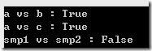
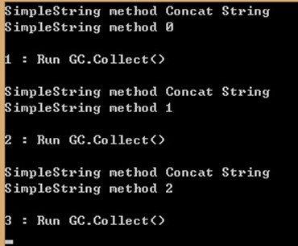

摘要 : 最近在博客园里面看到有人在讨论 C# String的一些特性. 大部分情况下是从CODING的角度来讨论String. 本人觉得非常好奇, 在运行时态, String是如何与这些特性联系上的. 本文将侧重在通过WinDBG来观察String在进程内的布局, 以此来解释C# String的一些特性.
问题
C# String有两个比较有趣的特性.
String的恒定性.
字符串横定性是指一个字符串一经创建，就不可改变。那么也就是说当我们改变string值的时候，便会在托管堆上重新分配一块新的内存空间，而不会影响到原有的内存地址上所存储的值。String的驻留.
CLR runtime通过维护一个表来存放字符串，该表称为拘留池，它包含程序中以编程方式声明或创建的每个唯一的字符串的一个引用。因此，具有特定值的字符串的实例在系统中只有一个。
对应着两个特性, 我产生了一些疑问.
- String的恒定性是怎么样让string进行比较的时候出现有趣的结果的? 它的比较结果为什么会与其他引用类型的结果不一样?
- 什么样的String会被放到拘留池中?
- 拘留池是怎样的数据结构? 它真是个Hashtable吗?
- 驻留在拘留池内的String会不会被GC, 它的生命周期会有多长(什么时候才会被回收)?
String的恒定性
先看看下面的例子 :
1 | private static void Comparation() |
执行后结果如下:

从结果上看, 虽然是不同的变量 a, b, c. 由于字符串的内容是相同的, 所以比较的结果也是完全相同的. 对比SimpleObject的实例, smp1和smp2的值虽然也是相同的,但是比较的结果为false.
下面看一下运行时, 这些objects的的情况.
在运行时态, 一切皆是地址. 判断两个变量是否是相同的对象, 直观的可以从它地址是否是相同的地址来进行判断.
用!dso命令打印出栈上对应的Objects. 可以看到Test String”虽然出现了3次, 但是他们都对应了一个地址0000000002473f90 . SimpleObject的对象实例出现了2次, 而且地址不一样, 分别是0000000002477670
和 0000000002477688
所以, 在使用String的时候, 实质上是重用了相同的String 对象. 在new一个SimpleObject的实例时候, 每一次new都会在新的地址上初始化该对象的结构. 每次都是一个新的对象.
1 |
|
当字符串内容发生改变的时候, 任何微小的变化都会重新创建出一个新的String对象. 在我们调用这段代码的时候
1 | Console.WriteLine("a vs b : " + object.ReferenceEquals(a, b)); |
CLR runtime实际上做了两件事情. 为字符“a vs b”分配了到了一个新的地址. 将对比结果与刚才的字符拼接到了一起, 分配到了另外一个新的地址. 如果多次拼接字符串, 就会分配到更多的新地址上, 从而可能会快速的占用大量的虚拟内存. 这就是为什么微软建议在这种情况下使用StringBuilder的原因.
1 | 0:000> !dso |
String的驻留
CLR runtime通过维护一个表来存放字符串，该表称为拘留池，它包含程序中以编程方式声明或创建的每个唯一的字符串的一个引用。因此，具有特定值的字符串的实例在系统中只有一个。
我们看一下如何来理解这句话.
1 | static void Main(string[] args) |
这是第一次的执行结果. 此时只执行到了SimpleString里面, 还没有从这个方法返回.
我们可以看到stack上有4个string. 分别是按照代码逻辑拼接起来的string的内容. 从这里我们就可以当我们在拼接字符串的时候, 实际上会在Heap上创建出多个String的对象, 以此来完成这个拼接动作.
1 | 0:000> !dso |
随意用其中一个来检查它的引用情况.
从!gcroot的结果看, 这个string被两个地方引用到. 一个是当前的线程. 因为正在被当前线程使用到, 所以能够看到这个非常正常.
另外一个是root在一个System.Object[]数组上. 这个数组被PINNED在了App Domain 0000000000491880 上面. 这里显示出来, String其实是驻留在一个System.Object[]上面, 而不是很多人猜测的Hashtable. 不过料想CLR 应该有一套机制可以从这个数组中快速的获取正确的String. 不过这点不在本篇的讨论范围之内.
1 | 0:000> !gcroot 0000000002a93f70 |
我们可以检查一下这个System.Object[]里面都有什么.
从这个数组里面可以看到代码中显示声明的的字符串. 第一个元素是一个空值, 这个里面保留的是我们最常用的String.Empty的实例. 第二个元素是”Run GC.Collect()”. 这个在code的里面的main函数中. 当前还没有被执行到, 但是已经被JITed到了该数组中. 其他两个被显示定义的字符串也能够在这个数组中被找到. 另外可以确认的是, 拼接出来的字符串, 临时生成的字符串都没有在这里出现. 然而, 通过拼接出来的String并不在这个数组里面. 虽然拼接出来的String同样分配到了heap上面, 但是不会被收纳到数组中.
1 | 0:000> !dumparray -details 0000000012a93030 |
继续让代码执行下去, 我们需要来几次GC. 验证一下驻留的字符串是否会在不使用之后被GC掉.

GC完成之后, 按照所设想的, CallStack上面的String都已经被清除掉了.同时因为已经做过了GC动作, GC heap进过了压缩, 没有被PINNED住的对象地址会发生改变. 所以要验证驻留的String是否会被回收, 可以从驻留数组下手. 由于该数组是被PINNED住, 所以即使发生了GC的动作, 它的地址也不会发生改变. 所以可以通过相同的命令把数组里面驻留的String都列出来.
结果是与我的预期是一致的. 只有被显示定义的String保留在该数组内, 而这些String不会被回收. 通过拼接零时生产的String, 则不会加入到这个数组内, 在GC发生后, 由于没有被引用而被回收掉.
1 | 0:000> !dumparray -details 0000000012a93030 |
所以经过上面的观察, 可以得出的结论是驻留的String生命周期非常长. 那么, 在什么时候他才会被回收?
从上面gcroot的结果, 可以看到主流数组是被PINNED住. 而引用这个数组的App Domain 0000000000C51880.
用!dumpdomain -stat的命令将所有的app domain信息打印出来. 可以看到这个App Domain是我们代码运行的Domain (ConsoleApplication3.exe). 这个驻留数组是由CLR 来维护, 并且与当前的App Domain联系到一起. 所以, 理论上这些驻留数组的生命周期跟这个App Domain是一致的.
1 | 0:000> !dumpdomain -stat |
写在最后面
- String的恒定性. 字符串横定性是指一个字符串一经创建，就不可改变。那么也就是说当我们改变string值的时候，便会在托管堆上重新分配一块新的内存空间，而不会影响到原有的内存地址上所存储的值。
- String的驻留. CLR runtime通过维护一个表来存放字符串，该表称为拘留池，它包含程序中以编程方式声明或创建的每个唯一的字符串的一个引用。因此，具有特定值的字符串的实例在系统(App Domain)中只有一个。
直接在CODE里面声明的String会被CLR runtime维护在一个Object[]内.
临时生成的string或者拼接出来的String不会维护在这个驻留数组中.
驻留数组的生命周期跟它位于的App Domain一样长. 所以GC并不会影响驻留数组所引用的String, 它们不会被GC.
参考
- http://blog.csdn.net/fengshi_sh/article/details/14837445
- http://www.cnblogs.com/charles2008/archive/2009/04/12/1434115.html
- http://www.cnblogs.com/instance/archive/2011/05/24/2056091.html
Sonic Guo